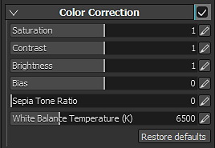

Color correction parameters :
| Setting | Description |
|---|---|
| Saturation | Controls the intensity/saturation of the color in the viewport. Use a saturation at 0 to get a grayscale render. |
| Contrast | Controls the difference between bright and dark colors. |
| Brightness | Controls the brightness/luminance of the colors. |
| Bias | Globally offsets the luminosity of the viewport. |
| Sepia tone ratio | Advanced parameter to give a sepia effect to the viewport. |
| White Balance Temperature (K) | Temperature of the colors, in Kelvins. Default is 6500K, corresponding to daylight. See Wikipedia for more information. |